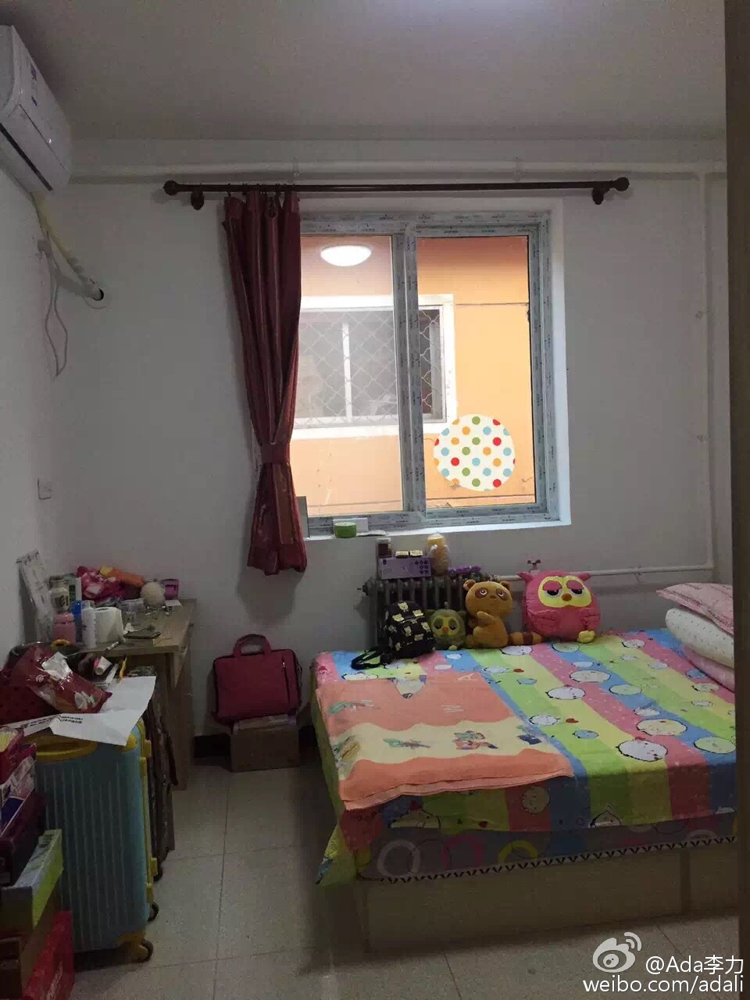

回复@Gator:学术以及专业里领域的审美不同于生活审美，比如数学之美，能够领略到的人不多。但生活上的审美，每个人都会有，而且这种审美没有标准，但有歧视链，符合社会阶层的歧视链。@Ada李力:#创业# 这是个朋友圈中某纹眉师的闺房，这么丑的布置和审美，我自己是不会找她纹眉的。--- 美业有个很怪的现象，一群低学历的，给高学历用户讲美容知识。一群乡村审美风的，给城市姑娘做脸部设计… 真是醉了。 
回复@北京人在迈阿密:我也不知道怎么改。在家的聊天，求的就是不走脑子，说话前还要想想怎么措辞，会累屎的。有同事的方法不错：吵还是吵，吵完马上忘。也不是太容易学会的本事。//@北京人在迈阿密:很经典的对白。问题是怎么改？@Ada李力:吵架是怎么升级的？ | 李力(Ada Li)的博客 网页链接

 网页链接
网页链接